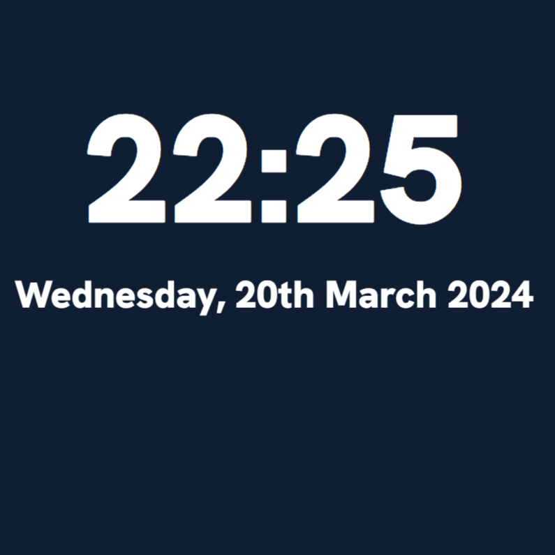

Todo List
An app where you can tick off the things that you need to get done. You know what a todo list is. Just use it. It features 4 different statuses, a maximum capacity ofint x = lists.maxLength;. In other words, I don't know the specifics.

Todo List Download
Right now, it just takes you to the page that the app would normally take you to. I'm "working on it". I was going to use WebCatalog to get a webpage into an exe file, but then it turned out to take up about 100MB of space. Not much, but still too much.
Planet Orbit viewer
This is by no means scientifically accurate. It's just a bunch of JavaScript code I have slapped together, and some hastily-made planet sprites, but I think it's pretty cool to watch the planets move around like they do in real life. The time scale is mildly accurate as well! Or, at least, it seems like it.
Simple Clock
Most people would call this a clock. And that's what it is. Featuring a customisable date and time display!!!Also features the ability to break the system if you edit the HTML. I mean, you can do that with any website, this is just filler text. 
Electric Fields
Most people would call this a clock. And that's what it is. Featuring a customisable date and time display!!!Also features the ability to break the system if you edit the HTML. I mean, you can do that with any website, this is just filler text.